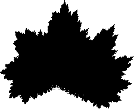
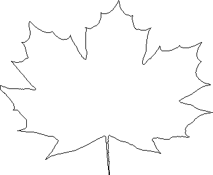

This is not a very good match, so we make a few additional refinements. To get rid of the lump on the left side of the central part of the leaf, we widen the second copy and move it back to the right: change r2 to 0.8 and e2 to -0.3. To soften the jagged top of the central part, we move the fourth part down by changing f4 to 1.75. Here is the picture, together with the IFS producing it.
|  |  |
| r | s | theta | e | f | |
| T1 | .65 | .75 | -30 | .7 | .3 |
| T2 | .80 | .60 | 45 | -.3 | .5 |
| T3 | .7 | .7 | 0 | 0 | 0 |
| T4 | .25 | .4 | 0 | .2 | 1.75 |
This is a bit better match, but additional refinements still could improve the image. Not, however, that the outline of the IFS-generated image will be a fractal on all levels, while a real leaf has this property over only a few levels.
Return to Sample.